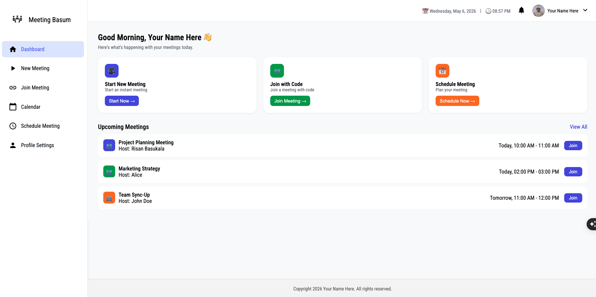
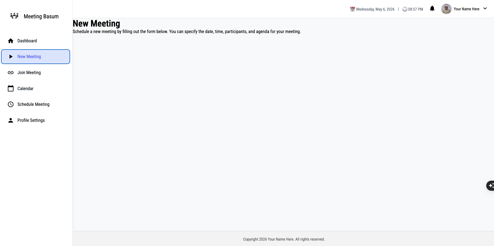

Submission deadline: Sunday evening at 11:59 PM.
Plan enough time for route testing, refresh checks, and useEffect cleanup validation.
useEffect exercise, then move to the full router build.useEffectObjective: Build one small standalone React component to practice useEffect and cleanup safely.
LiveClock.useState to store the current Date.useEffect with setInterval to update the state every second.clearInterval.HH:MM:SS (date line is optional).Deliverable: One component file plus a screenshot or short note proving the clock updates every second.
setInterval returns an id. Save it and pass it to clearInterval in cleanup.[]) for this case.Objective: Recreate the UI shown in these screenshots using React Router features from Week 3.

/ or /dashboard)
/new-meeting)BrowserRouter once at root and create an app-shell layout route with persistent sidebar, top header, footer, and <Outlet />.NavLink in the sidebar for: /, /new-meeting, /join-meeting, /calendar, /schedule-meeting, and /profile-settings./meetings/:meetingId using useNavigate. Read the id with useParams./meetings/:meetingId, create nested routes (details and participants) rendered through another <Outlet /> with relative NavLinks./calendar, implement ?view=month|week switching via useSearchParams.path="*") with a friendly Not Found page and link back home.Deliverable: Working screenshot-matched app plus a short ROUTES.md listing each route, what it renders, and which router hook(s) it uses.
LiveClock that updates every second.LiveClock cleanup is implemented correctly with clearInterval./meetings/:meetingId.details and participants) and calendar query param (?view=) are working.ROUTES.md are included in your submission.Deployment and Context/Zustand: complete Week 5 assignment.